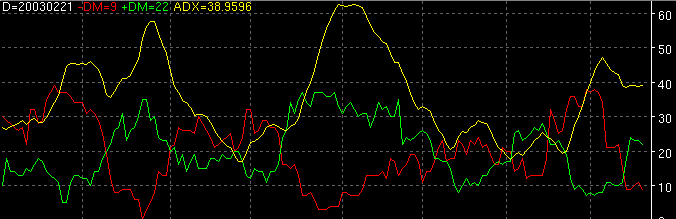

Directional Movement Index - DMI

Parameters:
- +DM Color - Positive directional movement color
- +DM Line Type - Positive directional movement line type
- +DM Label - The text to identify the +DM plot
- -DM Color - Negative directional movement color
- -DM Line Type - Negative directional movement line type
- -DM Label - The text to identify the -DM plot
- ADX Color - Average directional index color
- ADX Line Type - Average directional index line type
- ADX Label - The text to identify the ADX plot
- Period - The period used for the DMI
- Smoothing - The period used for smoothing the ADX
- Smoothing Type - The type of MA to use for smoothing the ADX
- Alert Type - The type of alert rule (see Alerts below)
Description:
Alerts:
- Crossover
- Extreme Point
- Turning Point